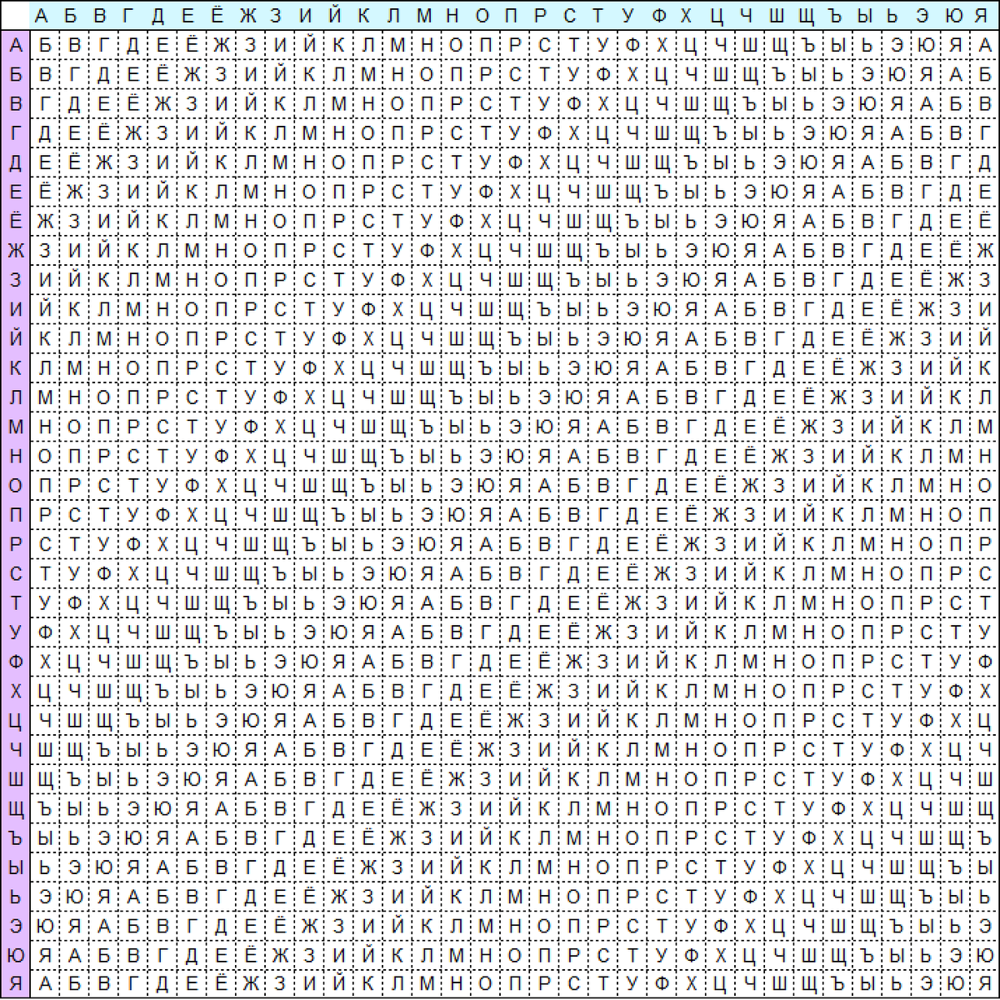

Шифр Виженера состоит из последовательности нескольких шифров Цезаря с различными значениями сдвига. Для зашифровывания может использоваться таблица алфавитов, называемая tabula recta или квадрат (таблица) Виженера.
Применительно к русскому алфавиту таблица Виженера составляется из строк по 33 символов, причём каждая следующая строка сдвигается на несколько позиций. Таким образом, в таблице получается 33 различных шифров Цезаря. На каждом этапе шифрования используются различные алфавиты, выбираемые в зависимости от символа ключевого слова. Например, предположим, что исходный текст имеет такой вид: ИВАНОВ, а ключевое слово: СЫН.
Записываем ключевое слово («СЫН») циклически до тех пор, пока его длина не будет соответствовать длине исходного текста:
| Исходный текст | И | В | А | Н | О | В |
| Ключевое слово | С | Ы | Н | С | Ы | Н |
| Зашифрованный текст | Ъ | Э | Н | Я | Й | П |
Первый символ исходного текста («И») зашифрован последовательностью С, которая является первым символом ключа. Первый символ зашифрованного текста («Ъ») находится на пересечении строки С и столбца И в таблице Виженера. Точно так же для второго символа исходного текста используется второй символ ключа; то есть второй символ зашифрованного текста («Э») получается на пересечении строки Ы и столбца В. Остальная часть исходного текста шифруется подобным способом.
{{ error }}
{% endblock %}